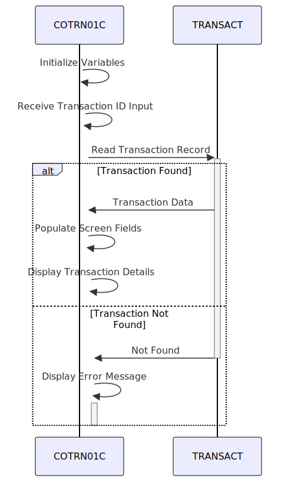

Gerado em: 1º de outubro de 2024
Descrição Resumida:
Este programa, COTRN01C, permite que os usuários visualizem os detalhes de uma transação específica do arquivo TRANSACT. Ele recebe um ID de transação, recupera os dados de transação correspondentes e os exibe para o usuário.
Histórias do Usuário: Como representante do call center, preciso visualizar os detalhes de uma transação específica para poder responder às perguntas dos clientes.
Épico Relacionado: 4 - Processamento de Transações
Requisitos Técnicos:
TRANSACT usando EXEC CICS READ.TRANSACT:
TRANSACT usando EXEC CICS READ com o ID de transação fornecido como chave.TRAN-RECORD.TRNIDI)CARDNUMI)TTYPCDI)TCATCDI)TRNSRCI)TRNAMTI)TDESCI)TORIGDTI)TPROCDTI)MIDI)MNAMEI)MCITYI)MZIPI)TRANSACT, o programa exibirá uma mensagem de erro “Transaction ID NOT found…”EXEC CICS SEND para exibir a tela e EXEC CICS RECEIVE para receber a entrada do usuário.TRAN-RECORD: Esta estrutura de dados define o layout de um registro de transação no arquivo TRANSACT.COTRN1AO: Esta estrutura de dados é usada para enviar dados para a tela, incluindo as informações do cabeçalho e quaisquer mensagens de erro.COTRN1AI: Esta estrutura de dados é usada para receber dados da tela, incluindo o ID da transação inserido.Modelos Relacionados
TRAN-RECORD:
TRAN-ID: String - Identificador exclusivo para cada transação.TRAN-CARD-NUM: Integer - Número do cartão de crédito associado à transação.TRAN-TYPE-CD: String - Tipo de transação (por exemplo, compra, reembolso).TRAN-CAT-CD: String - Categoria da transação (por exemplo, mantimentos, combustível).TRAN-SOURCE: String - Origem da transação (por exemplo, online, na loja).TRAN-AMT: Decimal - Valor da transação.TRAN-DESC: String - Descrição da transação.TRAN-ORIG-TS: DateTime - Timestamp da origem da transação.TRAN-PROC-TS: DateTime - Timestamp do processamento da transação.TRAN-MERCHANT-ID: String - Identificador exclusivo para o comerciante.TRAN-MERCHANT-NAME: String - Nome do comerciante.TRAN-MERCHANT-CITY: String - Cidade do comerciante.TRAN-MERCHANT-ZIP: String - CEP do comerciante.Configurações:
WS-TRANSACT-FILE: TRANSACT - Nome do arquivo que armazena os dados da transação.WS-TRANID: CT01 - Código de transação para o programa.Melhorias de Código:
TRAN-ID no arquivo TRANSACT.Melhorias de Segurança:
Diagrama Conceitual:
–Made by “Smart Engineering” (by Compass.UOL)–